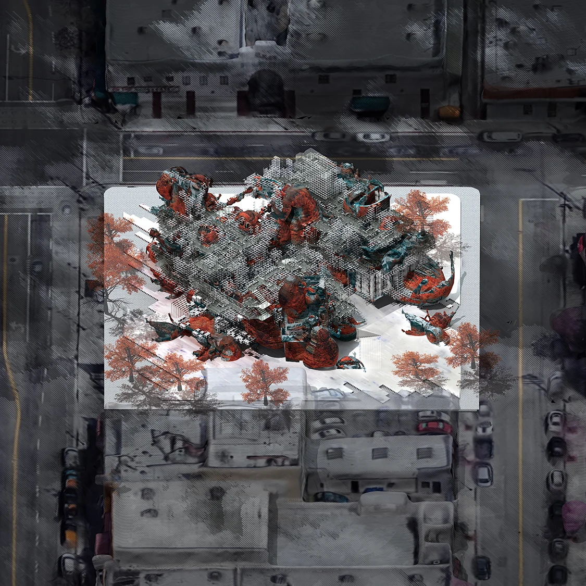
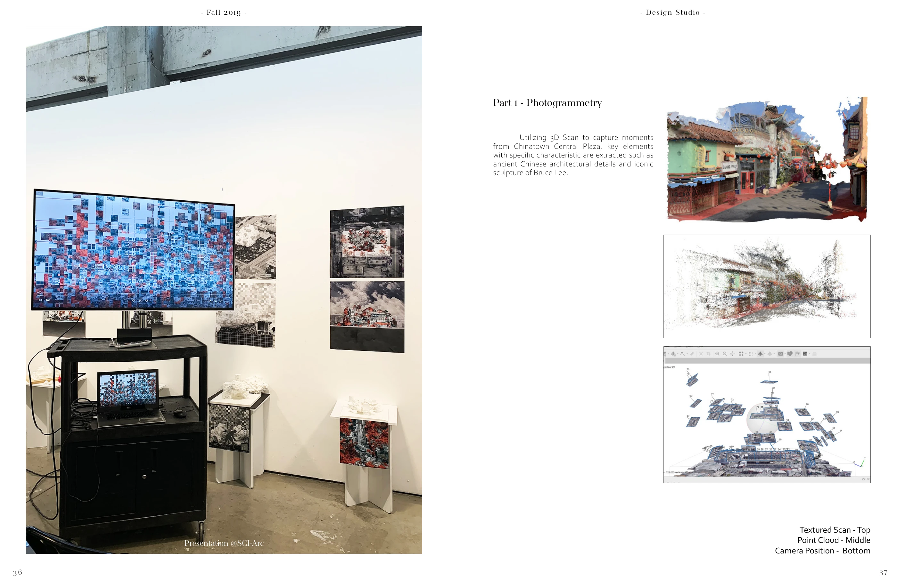
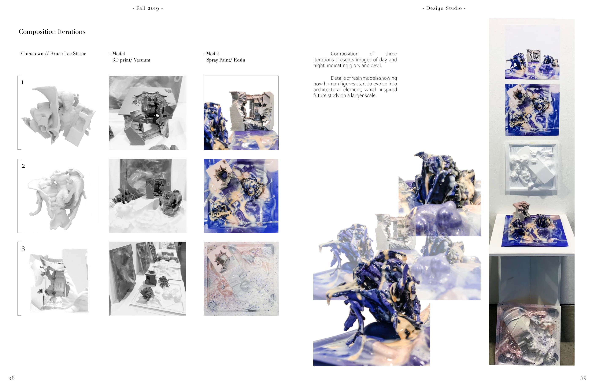
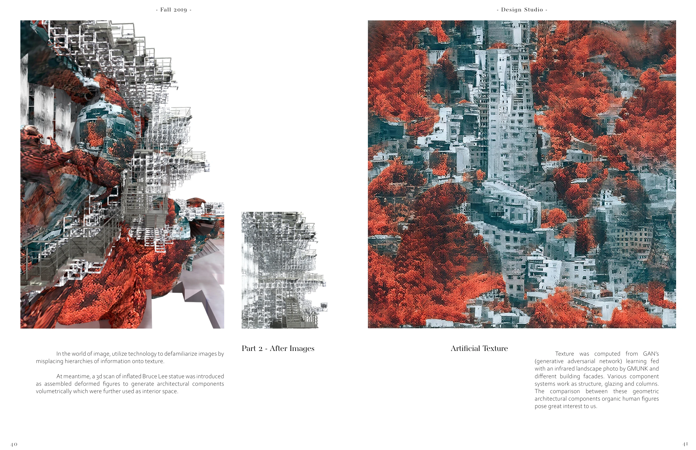
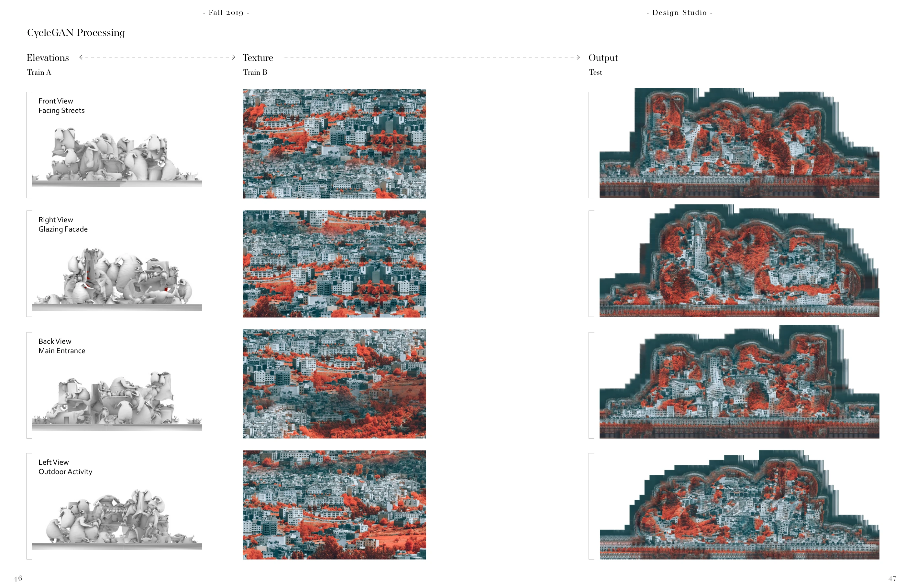
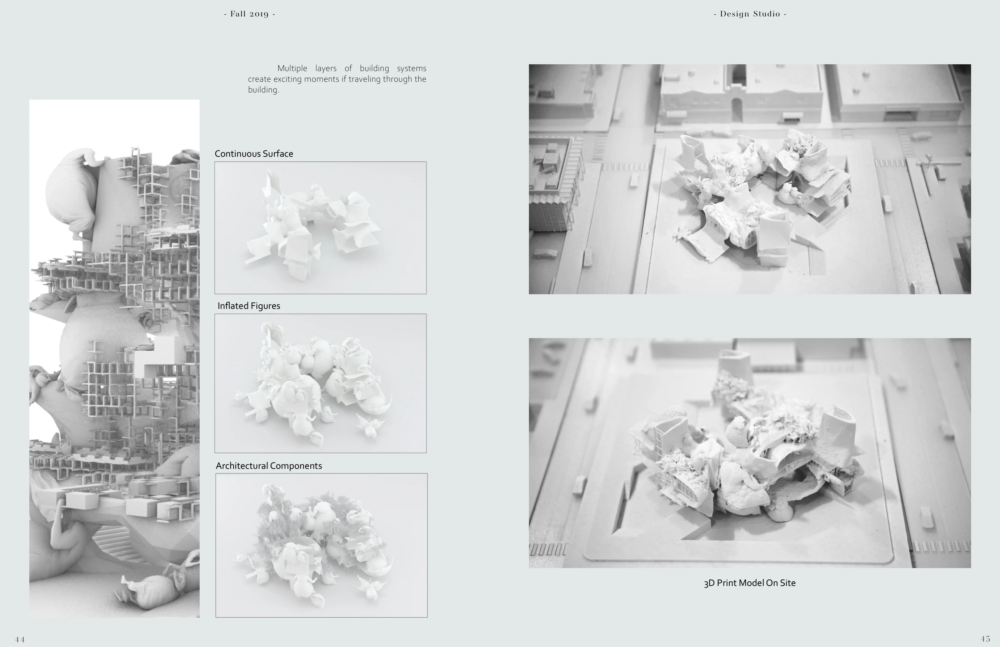
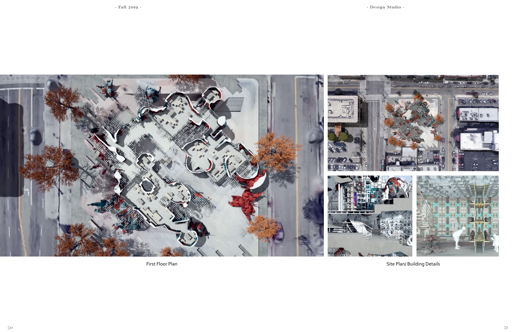
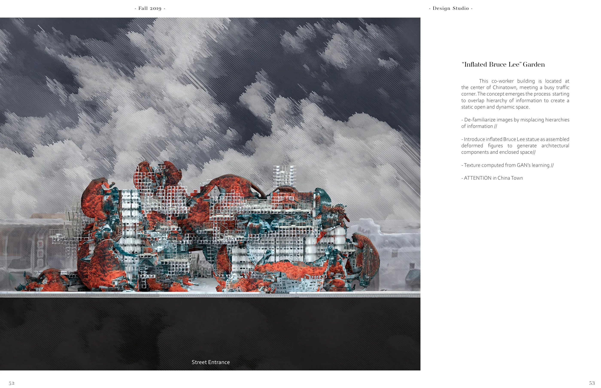

After Images
An architectural study translating scans, physical models, and machine-learned textures into a new reading of Los Angeles Chinatown.
Collaboration with Yufei Guo · SCI-Arc, Fall 2019 · Instructor: M. Casey Rehm
Photogrammetry · 3D printing · Vacuum forming · Resin · Rhino · Cinema 4D · CycleGAN · Processing

Capture, fabricate, transform
Photogrammetry records elements of Chinatown Central Plaza, including the Bruce Lee statue. Printed, vacuum-formed, painted, and resin-coated models test how recognizable figures become architectural components.



Learning another surface
CycleGAN studies translate between elevations and texture imagery. The process deliberately unsettles the relationship between a building’s form and the information carried by its surface.




Between model and building
Physical models, layered components, and plans develop the image experiment into spatial organization.


An unfamiliar Chinatown
The final proposal is a coworking building at a busy Chinatown corner, combining transformed figures, architectural systems, and learned textures.
